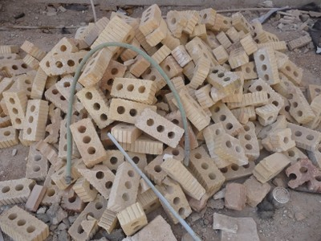

Ladrillos huecos de barro cocido [CLBRH]
Bloques de arcilla cocida perforados con un o más huecos (cavidades) a través del espesor del ladrillo con el área de cavidades mayor al 25 % del volumen . Los agujeros se pueden ver desde arriba después de que el ladrillo se ha establecido .

Ladrillos huecos de arcilla cocida, Irán (A. Charleson)

Ladrillos huecos de arcilla cocida con perforaciones verticales, Peru (S. Brzev)